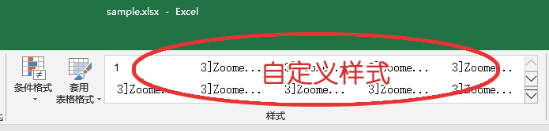

清除Excel中的自定义样式
该页面可以帮助你将Excel文件的所有自定义样式删除，你还需要将新生成的文件在Excel中打开并重新保存一次，来彻底清除它们。
将文件拖拽到这里

-
多余的自定义样式，是通过不当的新建文件方式或是在合并Excel文件时，从一个文件带入另一个文件中，就像病毒一样，在公司的各种文件中传播，造成文件体积庞大、打开缓慢、不便于邮件传送、合并时易出错等等问题。该页面可以帮助你直接清除Excel中的所有自定义样式。
- 该页面的所有计算都是在本地完成的，不会上传你的文件。
- 文件需要是xlsx格式，如果不是，请先在Excel中另存为xlsx格式。
- 处理过程：
1、使用zip解压文件；
2、删除 xl 文件夹下 styles.xml 文件中的 <cellStyles>...</cellStyles> 标签内的所有内容；
3、重新用zip打包成xlsx文件，你将以“下载”的方式获得新文件；
4、在Excel中打开并重新保存，Excel会自动清除 <cellStyleXfs>...</cellStyleXfs> 标签内多余的内容。
- 在Chrome浏览器中可以同时处理多个文件。
其他浏览器例如IE不支持同时下载多个文件。
- 这里提供一个
示例文件
，其中包含了将近5万个无效的自定义样式，经过该页面处理，并在Excel中打开并重新保存后，可以从600kb缩小到50kb以下。
- 最后，希望大家养成好习惯：
1、通过右键菜单来新建Excel文件，不要以删除所有sheet的方式，把旧文件当做新文件使用；
2、使用Office 2016以上版本的Excel来合并文件，可以避免传递无用的自定义样式。